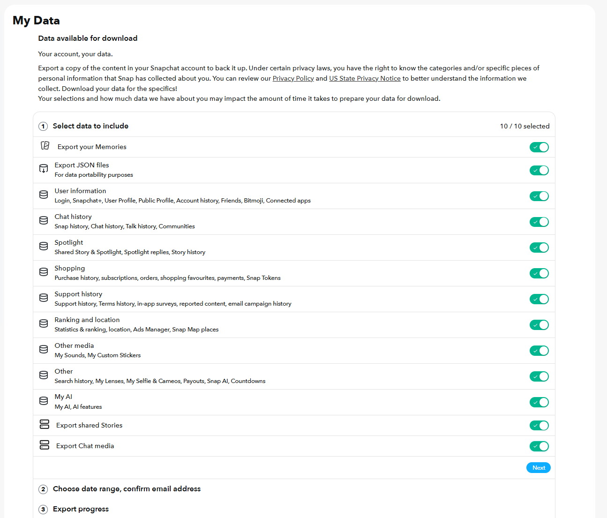
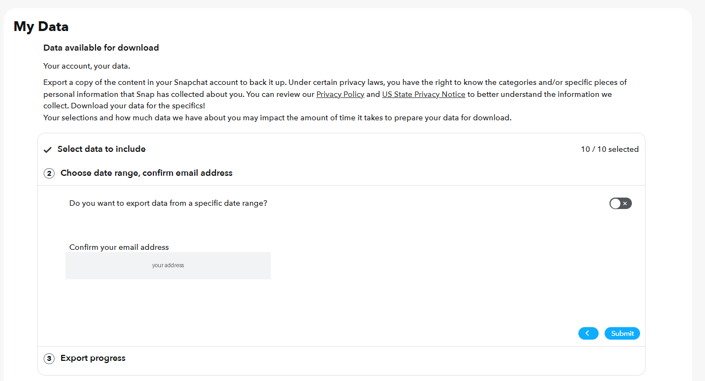
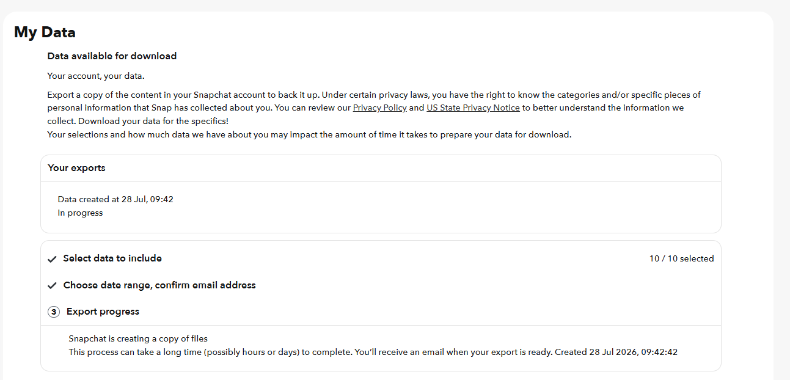

How to export your data from Snapchat
Snapchat is required to give you a copy of the data it holds about you, including messages, posts and social activity and location history. The request itself is free, and arrives as .zip containing JSON and HTML files. Typical wait: hours to days, and Snapchat emails you when it is ready.
Step by step
Every screenshot below is from Snapchat's own pages on 28 July 2026.
-
Sign in at accounts.snapchat.com
Use a browser rather than the app. The app can start the same request from Profile, then the gear icon for Settings, then My Data, but the browser version shows you the full list of categories at once.
-
Open My Data
It is the first item in the left-hand menu once you are signed in. The page walks through three numbered stages: choose your data, confirm the date range and email, then wait.

Stage 1. Every toggle is on by default, but check them rather than assuming. -
Leave Export JSON files switched on
This is the toggle that matters most and it is easy to skim past, because it sits second in the list and its only label is 'For data portability purposes'. Without it you get a set of web pages you can read but nothing a tool can work with. Muletto reads the JSON to build the searchable view of your chats, snaps, friends and locations, and so does every other importer.
-
Check the three media exports are on
Export your Memories, Export shared Stories and Export Chat media are listed separately from the data categories, and they are the only route to your actual photos and videos. The counter at the top right reads 10 / 10 selected when the data categories are all on, so it can look complete while a media toggle is off. Look at those three specifically.
-
Confirm the rest of the categories and press Next
The remaining categories are User information, Chat history, Spotlight, Shopping, Support history, Ranking and location, Other media, Other, and My AI. Chat history covers snaps, chats, talk and Communities. Ranking and location covers your Snap Map places and location history. There is no reason to leave any of them out of a backup.
-
Leave the date range off, and check the email address
Stage 2 asks whether you want a specific date range. It is off by default, which is what you want for a full backup - turning it on gives you a slice instead. Then check the address shown is one you can still get into, because that is where the download link goes. Press Submit.

Stage 2. The date range toggle is already off - leave it that way for a full backup. -
Wait for the email
Snapchat says the job can take hours or days depending on how much it has to gather. The page shows the request as In progress with the time you created it, and you can close the tab - it does not need to stay open.

Stage 3. Safe to close the tab; the link arrives by email. -
Expect an in-app notification you can ignore
Snapchat pushes a notification from the app itself, saying your data is on its way. It is informational and there is nothing to do with it - no link, no download, and it does not mean the export is ready. Ignore it and wait for the email.
About two minutes after submitting. Informational only - not the export. -
Download every part promptly
The download links expire, so save the files when the email lands rather than leaving it for the weekend. Large exports are split into several parts, and you need all of them.
Worth knowing
Common questions
Why are my Snapchat memories not in the download?
Unless you ticked the option to include them, the export holds links to your memories rather than the files, and those links expire. Request again with Export your Memories selected if you want the pictures and videos themselves.
Why is there no json folder in my Snapchat export?
The JSON files are an option you tick when requesting. Without it you get only the HTML pages, which are readable by eye and much harder for any tool to use. Request again with Export JSON Files selected.
How far back does Snapchat chat history go?
Only saved messages are included. Anything not explicitly saved in the conversation was deleted from Snapchat's servers and cannot be recovered by any request.
Why do my Snapchat memories have the wrong date?
The capture date and location live in the export's JSON, not inside the downloaded picture, so anything reading the file alone sees the download date. Muletto reads the JSON and writes the real date and place back into the file.
What Muletto does with this export
Once your download arrives, open it in Muletto. The file is read in your browser, on your own machine - nothing is uploaded. You get a breakdown of what is inside, duplicate detection, and a browsable view of your photos, messages, timeline and records.